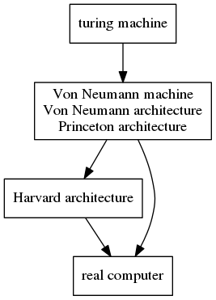

Do you know these pieces of thingsExcept foo, bar there are also other words somtimes used as nonsense identify such as foobar, fubar, baz, qux, and norf. The earliest version of "hello world" (without capital letters or exclamation mark) could be tracked was found at 1974 Bell Laboratories internal memorandum by Brian Kernighan, Programming in C: A Tutorial and was being well-known by the book The C Programming Language. The comment form /**/ comes from a programming language PL/I. The Harvard architecture isn't at the same level with Von Neumann architecture in a relation tree, ENIAC isn't the first electric computer and isn't based on Von Neumann architecture , Von Neumann isn't the father of computer even electric computer, and there is a relation tree as follow. "software engineering" this term was coined first by Anthony Oettinger and then the term was sponsored and facilitated by NATO. Pointer isn't never exclusive for C or C++, actually, almost all the mainstream programming languages have pointer. Nowadays the most common alternative style in the curly brace placement for the control statement (but not for function definition) is K&R style (originated in Kernighan and Plauger's The Elements of Programming Style) and Allman style (named after Eric Allman, and also known as "BSD style" since Allman wrote many of the utilities for BSD Unix). their respective example is as follow K&R style: opening brace at the same line as its control statement, closing brace remains in a line of itself
while (i < 3) {
i++;
}
Allman style: the brace of a control statement is on the next line, do likewise as K&R style, the closing brace is on a separate line
while (i < 3)
{
i++;
}
The first formal description of the waterfall model was cited in the article by Winston W. Royce, but this modal was presented as a flawed modal, many people followed this flawed modal in next many years, and, paid less attention to the iterative and incremental development which he advocated in this article. If you have any supplement, amendment or want to get above term's reference material or question about these article, please leave a comment or contact me te#dam.moe (replace # by @) , put supplements with their source links or references, and, this page is a incessant update page. thx:) |